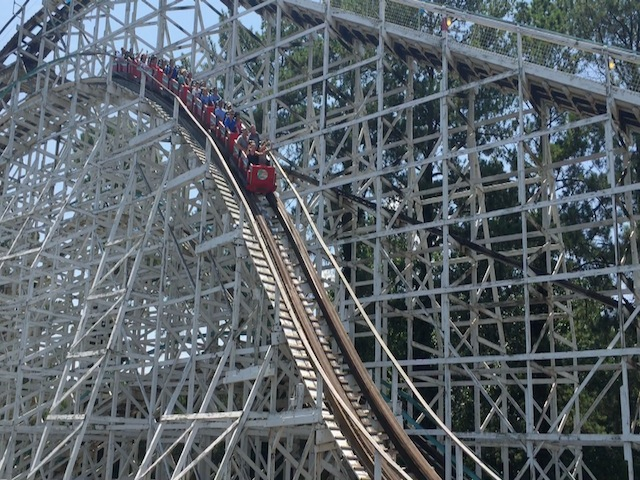
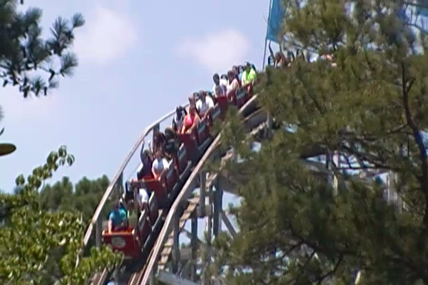

| |

Georgia Cyclone Review

For todays review, we're going to travel back in time to review the Georgia Cyclone. This is another one of those Cyclone clones. Because cloning the Coney Island Cyclone used to be a really popular thing. But these clones have generally been getting demolished. And for good reason as some of these clones can be REALLY F*CKING BAD!!!! However, Georgia Cyclone was demolished not because it sucks. But rather, because they're giving it the RMC treatment. So now I have another RMC to check out and another reason to go back to SFOG. And...yeah. Georgia Cyclone was...interesting. It sucked, but not for the reasons people gave. All right. Let's ride and see what Georgia Cyclone's problem was. We roll around a turn and begin climbing the lifthill. We look around, and we get a view of...the past. Oh my god. We've traveled back in time. RUN YOU FOOLS!!! RUN!!! I'M FROM THE FUTURE!!! AND THE FUTURE IS F*CKING TERRIFYING!!! FLEE WHILE YOU STILL CAN!!!! We eventually reach the top and head down the first drop. This is...a fun first drop. It gives us some speed, and we're not shuffling too much. So far, so good. We then rise up and head into the turnaround. It's a smooth turnaround. Despite all the rumors, it doesn't SLAM us and give us some laterals. We drop back down, but sadly, we don't have our speed. Yeah. It has some, but it doesn't have anything that feels out of control. We then head up into a hill. There's not too much airtime here. Actually, there's no airtime here. Yeah. It's good that the ride isn't killing us like people warned. But at the same time, it's not intense or aggressive like people claimed either. So far, it's honestly kind of dull. We rise up into a turnaround. We do get a little bit of laterals here, but nothing crazy. And to make things worse, it's starting to shuffle a little bit here. We then head straight towards the drop back down. And yeah. It's shuffling right here. You drop down and rise up over another airtime hill and...how the hell is this ride slugging over these hills!? UGH! We then head up a small hill into a turnaround. This provides us with a little bit of laterals. But nothing exciting. But hey. There's also some good headchoppers. So that's good. We drop on out of the wooden mess into more headchoppers. Airtime hill, only there's no airtime. But at least there's more headchoppers. We shuffle through a tiny little hill. Honestly, this feels more like a pothole than an actual hill. And it's that time again. Time to rise up, go underneath the ride structure, and get another little bit of laterals as we embrace yet another turnaround. We then drop down and clunk through a small hill that should provide good airtime, but doesn't. We rise up, go through a turn, shuffle on through, and coast into the brake run. Yeah. I'm happy that this ride doesn't kill you. I heard so many horror stories about how the ride just beats you. I like that. However, it does have the boring problem. It doesn't have any airtime, really lousy laterals, and the shuffling on the ride wasn't bad, but it just felt like...Why!? Ugh. Well, it doesn't really matter as this ride is now gone, and they're building an RMC in its place. Even if Twisted Cyclone turns out to be the weakest RMC, it's still a huge improvement over this snorefest.
6/10
Location: Six Flags Over Georgia
Opened: 1990
Died: July 30, 2017
Built by: Dinn Coorperation
Last Ridden: June 27, 2016
Georgia Cyclone Photos


Home
|